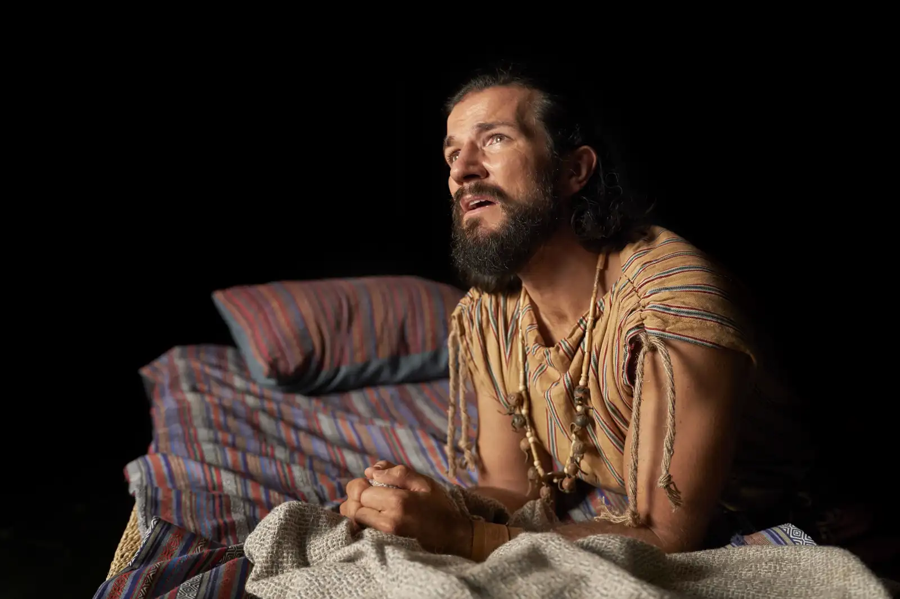
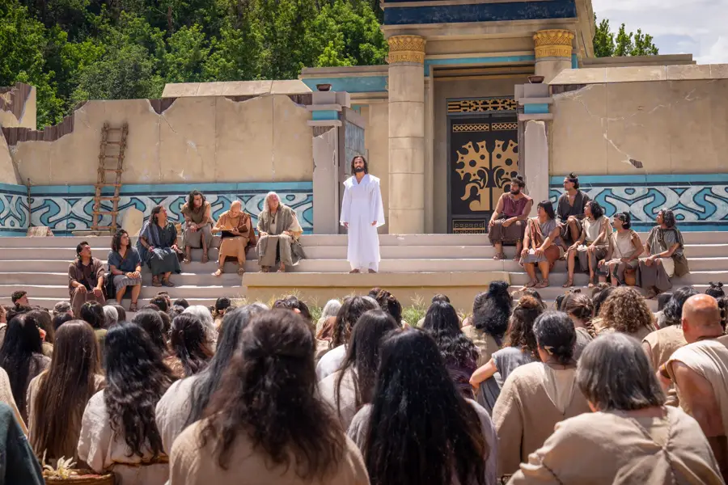
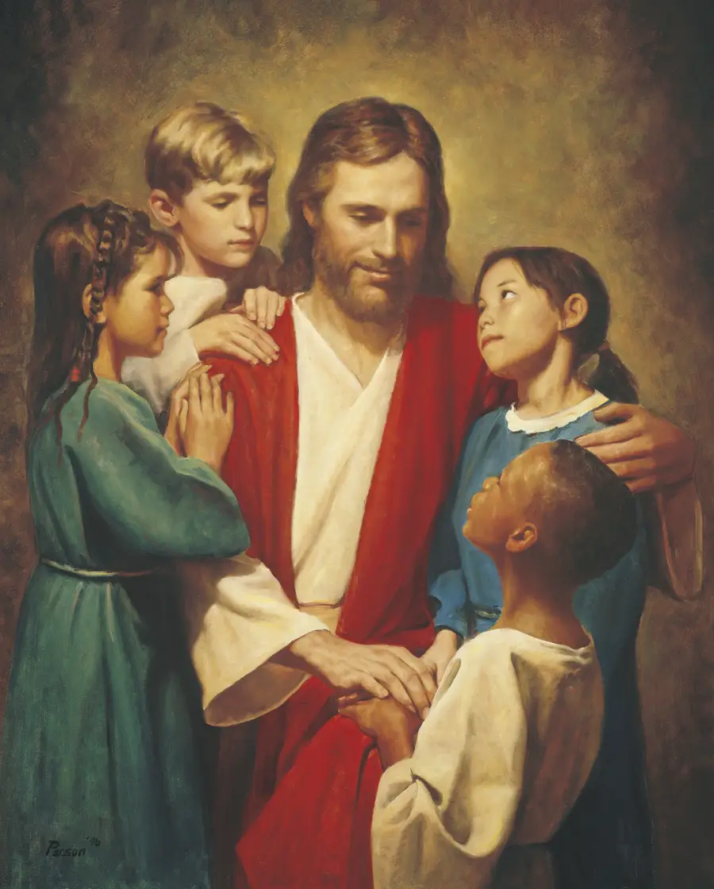

Nunca é tarde para recomeçar. A mudança é possível graças a Jesus Cristo.
Todos cometemos erros. Todos temos momentos de que não nos orgulhamos. Mas o evangelho de Jesus Cristo ensina-nos algo maravilhoso: podemos sempre recomeçar.
O arrependimento não é um castigo — é uma dádiva. É a oportunidade que Deus nos dá de deixar para trás aquilo que nos pesa e seguir em frente com esperança e paz.

Arrepender-se significa mudar — mudar de coração, de direção, de atitude. Não se trata apenas de sentir culpa, mas de decidir melhorar e recorrer a Jesus Cristo para receber a Sua ajuda.
O arrependimento é possível graças à Expiação de Jesus Cristo. Ele já pagou o preço dos nossos erros. Quando nos arrependemos com sinceridade, Ele perdoa-nos por completo — não guarda rancor, não leva a conta, não nos recorda aquilo que já ficou para trás.
Como diz a Escritura: ainda que os teus pecados sejam como a escarlata, tornar-se-ão brancos como a neve.

Arrepender-se exige humildade e coragem. Não é sinal de fraqueza — é uma das coisas mais corajosas que pode fazer. Cada dia é uma nova oportunidade de se aproximar da pessoa que Deus sabe que pode vir a ser.
Não importa o seu passado. Há esperança para si. Fale connosco e descubra o poder do perdão.
Contacte-nos